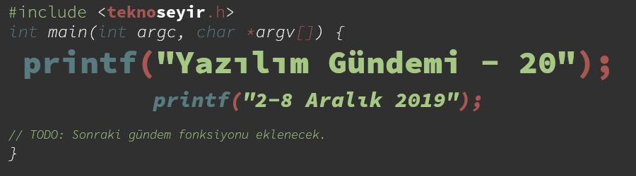
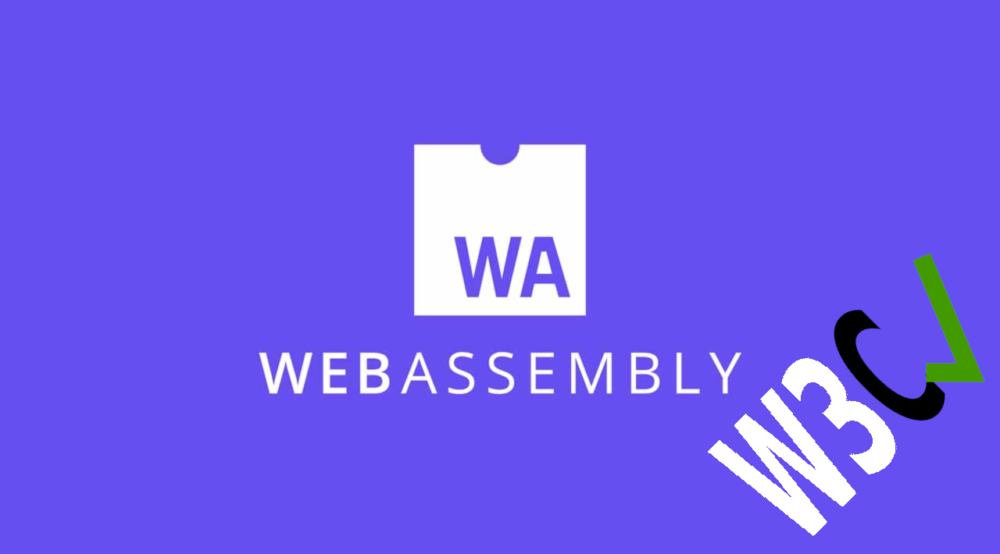
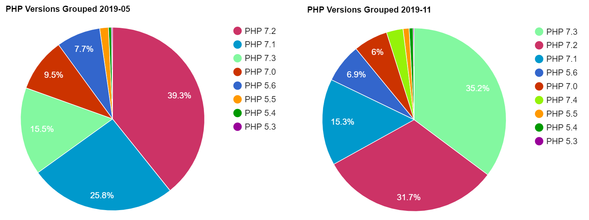
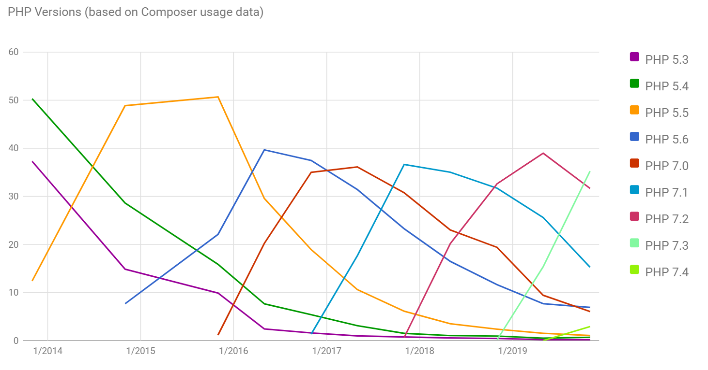

Yazılım Gündemi - 20
2-8 Aralık 2019
İçindekiler
- 1. 2 zararlı Python kütüphanesi PyPI üzerinden kaldırıldı
- 2. WebAssembly artık W3C onaylı bir web standardı oldu
- 3. AWS, kodlarımızı inceleyecek yapay zeka hizmetini duyurdu: Amazon CodeGuru
- 4. JetBrains takımlar için yeni bir ürün tanıttı: Space
- 5. Django 3.0 sürümü yayınlandı
- 6. PHP Versiyonları İstatistikleri 2019.2 yayınlandı
- 7. Qt yeni eklenti mağazasını duyurdu: Qt Marketplace
- 8. Yaklaşan Etkinlikler
- 9. Diğer Haberler
- 10. Lisans

< Önceki Gündem | 2-8 Aralık 2019 | Sonraki Gündem >
1 2 zararlı Python kütüphanesi PyPI üzerinden kaldırıldı
Gün geçmiyor ki kişilerin dikkatsizliklerini suistimal eden zararlı yazılımlar gün yüzüne çıkmasın. Genelde uygulamalar ve hizmetlerde görmeye alıştığımız fakat son zamanlarda programlama kütüphanelerinde de yayılmakta olan bu tarz kötü amaçlı kodlar içeren kütüphaneler gittikçe daha ciddi bir tehdit oluşturmaya başladı. Bu sefer de kütüphane isimlerinde bir benzerlik hilesi yaparak kendini başka bir kütüphane gibi gösteren ama aslında zararlı kodlar içeren 2 Python kütüphanesi tespit edildi ve Python paket yöneticilerinin kullandığı Python Package Index (PyPI) sisteminden kaldırıldı. Kütüphaneler bunlar:
- Gerçek kütüphane: dateutil. Sahtesi: python3-dateutil.
- Gerçek kütüphane: jellyfish. Sahtesi: jeIlyfish (ilk L harfi aslında bir I harfi).
İki sahte kütüphane de aynı kişi tarafından geliştirilmiş ve aslında zararlı kodları içeren kütüphane jeIlyfish olan, diğerinde ise bu kütüphane içindeki zararlı dosyayı indirip çalıştıran kodlar mevcut. Zararlı kodların amacı ise çalıştırıldığı bilgisayardaki SSH ve GPG anahtarlarını çalmak. python3-dateutil sahte kütüphanesi 29 kasımda yayınlanmış fakat diğeri 1 yıldır (11 Aralık 2018) yayındaymış.
İki kütüphane de artık erişilemez durumda fakat siz projenize eklemişseniz elbette otomatik olarak silinmeyecek, bu yüzden Python ile geliştirdiğiniz projelerinizi bir gözden geçirmenizde fayda var. Her ne kadar dikkatli olmaya çalışsak da bu tarz güvenlik zafiyetleri maalesef bir anlık dikkatsizliğimizi bile çok iyi kullanıyor. Bir kere böyle bir kütüphaneyi bağımlılık olarak eklediysek sonrasında fark etmemiz çok zor oluyor. O yüzden "ben yemem böyle şeyleri" dememek gerek.
2 WebAssembly artık W3C onaylı bir web standardı oldu

Her ne kadar alternatifleri çıksa da, zamanla bir şekilde hepsini geride bırakmış bir dil olan JavaScript uzun zamandır hayatımızda. Fakat son yıllarda JavaScript'in tahtı yavaş yavaş sallanmaya başlamıştı ve artık kendi kategorisinde tek dil değil. Çoğumuzun mutlaka ismini en az bir kere duyduğu WebAssembly, bu hafta içerisinde JavaScript'den sonraki dördüncü Web Standartı oldu. "Web Standartı" dediğimize göre hepimiz biliyoruz ki bunu ilan edebilecek bir kurum var: World Wide Web Consortium, çoğumuzun bildiği şekliyle nam-ı diğer W3C.
Konu başlığına eklediğim bağlantıdaki basın bülteninin yayınlanmasıyla tarayıcı üzerinde çalışabilen yeni bir W3C onaylı programlama dilimiz oldu (aslında uzun bir süredir vardı fakat artık resmi olarak onaylı). Tüm yazılım camiasına hayırlı uğurlu olsun. Elbette WebAssembly sadece tarayıcı üzerinde çalışan bir dil değil, kendisiyle başka çeşit çeşit işler de yapmak mümkün. Ayrıca yine W3C geliştiricilere hız ve verimlilik için WebAssembly öneriyor.
Bu basın bülteninin yayınlanmasının bir diğer anlamı ise artık tarayıcıların WebAssembly diline destek vermek için büyük bir nedeni var. Benim tahminim önümüzdeki aylar içerisinde tarayıcılar WebAssembly diline daha büyük yatırımlar yapacak ve birer birer desteklerini duyuracaklardır. Böylece benim de WebAssembly hakkında araştırmalar ve denemeler yapmak için bir motivasyonum oldu. Şimdiye kadar pek detaylıca incelemediğim bu dili daha iyi inceleme vakti gelmiş.
Siz WebAssembly hakkında ne düşünüyorsunuz? Deneme ve araştırma imkanınız oldu mu? Olduysa deneyimlerinizi ve görüşlerinizi yorumlar bölümünde belirtebilirsiniz.
3 AWS, kodlarımızı inceleyecek yapay zeka hizmetini duyurdu: Amazon CodeGuru
Amazon Web Services (AWS) girenin içerisinden kolay kolay çıkamadığı dev bir ekosistem. Bu ekosistem bu hafta içerisinde daha da genişledi ve içerisine yeni onlarca servis eklendi fakat ben bunlardan biriyle ilgili konuşmak istiyorum. Evet, başlıkta da ismi olan Amazon CodeGuru servisinden bahsediyorum. Bu servis sizin kodlarınızı inceleyerek size çeşitli önerilerde bulunan eğitilmiş bir yapay zeka. Şu an Preview olarak bazı bölgelerde kullanımda açılmış.
Günümüzde gerek teknolojik gelişmelerin hızlanması gerekse de bilgisayar sistemlerinin verimliliğinin artmasıyla bazı mesleklerin yerini yapay zeka sistemlerinin alacağı öngörüleri fazlaca yaygın. Bu yapay zeka sistemlerini geliştiren bizler her ne kadar "ya sistemleri biz geliştiriyoruz zaten, bize bi' şey olmaz", diye düşünsek de, ben aynı fikirde değilim. Günün birinde birisi mutlaka "kod yazan yapay zeka" sistemi çıkaracaktır ve bu sistem verimli ve ekonomik olduğu takdirde de bizim pabuçumuzun dama atılması çok kolay. Böyle bir şeye de çok uzak olduğumuz söylenemez. Bugün de Amazon'un bu hizmeti ile birlikte bunun mümkünlüğüne daha çok inanmaya başladım.
Yani anlayacağınız çember bizim için de daralıyor arkadaşlar. Bugün kodlarımızı inceleyip bize öneri sunan yapay zeka, yarın kod da yazar. Biraz komplo teorisi vari olacak ama belki de Amazon bu servisi "kod yazan yapay zeka"yı yaratmak için kullanacak, kim bilir… Elbette yine yazılım mesleğinin yerini tamamen yapay zeka almayacak. Sonuçta bu yapay zekaları geliştirecek olanlar da bizleriz (gerçi bundan da emin değilim çünkü geçen senelerde bir haftalık gündem değerlendirmesinde "yapay zekanın geliştirdiği yapay zeka, insanların geliştirdiği yapay zekadan daha verimli" gibi bir haber dinlediğimi hatırlıyorum) ama eskiye göre yazılım geliştirici ihtiyacı bir hayli azalacaktır diye düşünüyorum.
O gün geldiğinde yazılım camiasının vereceği tepkiyi çok merak ediyorum. Şu an yapay zeka geliştirmeleriyle birçok mesleğin yerini almayı planlayarak sevinen, "ya benim geliştirdiğim sistem insandan daha verimli çalışıyor işte istatistikler" diyerek olaya son derece bilimsel yaklaşabilen arkadaşlar, o gün geldiğinde de acaba "e tabii ki de benden verimliyse buyursun geçsin yerime ben kenara çekilirim" diyebilecekler mi, yoksa Osmanlı döneminde matbaanın gelmesini istemeyen hattatlar gibi bir akım mı oluşacak? Benim tahminim ikincisinin gerçekleşeceği yönünde, çünkü hiç kimse -haklı olarak- mesleğini kolay kolay bırakmak istemez. Fakat artık Osmanlı döneminde değiliz, böyle bir sistem ekonomik ve verimli olduğu takdirde hiçbir işveren bizim göz yaşımıza bakmaz. Fazla mesai ücreti vermeden (gerçi Türkiye'de zaten alamıyoruz ama) 7/24 çalıştırabileceği bir yapay zeka varken niye bize maaş ödesin?!
Bu konuda siz ne düşünüyorsunuz arkadaşlar? Özellikle bu konu hakkında görüşlerini çok merak ediyorum. Lütfen okuyorsanız fikirlerinizi belirtmekten kendinizi geri koymayın. Yorumlar bölümünde konuşalım.
Ayrıca Amazon'un tanıttığı diğer hizmetlerin birkaçı da bu şekilde (gözden kaçırdıklarım olabilir, takip etmek çok zor):
- Amazon Braket – Quantum Computing
- Amazon Managed Apache Cassandra Service (MCS)
- Amazon SageMaker Autopilot – Automatically Create High-Quality
- Amazon Kendra – Enterprise Search Service
- AWS Identity and Access Management (IAM) Access Analyzer
- AWS Nitro Enclaves - Isolated Compute Environments
- Amazon Fraud Detector
4 JetBrains takımlar için yeni bir ürün tanıttı: Space
JetBrains firmasını çoğumuz, hemen her programlama dili için çıkardıkları IDE araçları ve Kotlin programlama dili ile tanıyoruz. Bu sefer programlama dillerinden ziyade daha çok şirketlerdeki geliştirici takımları çıkardıkları bir ürünün erken erişim programını duyurumalarıyla gündemimizde yer alıyorlar. Git bazlı versiyon kontrol, bloglar, planlama, code review süreçleri vb. gibi birçok özellik ile birlikte gelen bu ürünü hem servis olarak JetBrains üzerinden kullanabiliyorsunuz, hem de kurumsal firmalar için kendi sunucunuzda barındırabiliyorsunuz.
Daha detaylı bilgi için konu başlığına eklediğim bağlantılara tıklayabilir ya da şuradaki duyuru videosunu izleyebilirsiniz.
5 Django 3.0 sürümü yayınlandı
Popüler Python web framework'ü Django'nun 3.0 sürümü yayınlandı. Bu yeni Django sürümü Python 3.6, 3.7 ve 3.8 sürümlerini destekliyor. Django geliştiricileri, üçüncü parti kütüphane geliştiricilerine Django 2.2'den önceki tüm sürümlere destek vermeyi durdurmayı tavsiye etmişler. Bu sürümde gelen yeniliklerin birkaçı ise şu şekilde:
- MariaDB desteği,
- ASGI (Asynchronous Server Gateway Interface) desteği,
- Diğer özellikler için konu başlığına eklediğim bağlantıya tıklayabilir ya da şuradaki videoyu izleyebilirsiniz.
Ayrıca Django sürüm yükseltme rehberi için buraya tıklayabilirsiniz.
6 PHP Versiyonları İstatistikleri 2019.2 yayınlandı

Şekil 3: (SAĞ): Mayıs 2019 PHP Versiyonları Kullanım Oranları
(SOL): Kasım 2019 PHP Versiyonları Kullanım Oranları

Şekil 4: Composer kullanım verilerine göre PHP versiyonlarının zamanda değişen kullanım oranları
7 Qt yeni eklenti mağazasını duyurdu: Qt Marketplace
C++ ile platformlar-arası (cross-platform) uygulama geliştirmeye yarayan Qt uygulama çatısının artık bir eklenti mağazası var. Geliştiriciler ücretli ya da ücretsiz birçok eklentisi bu mağaza üzerinden alıp, doğrudan uygulamaları üzerinde kullanabilecekler.
8 Yaklaşan Etkinlikler
9 Diğer Haberler
- Microsoft, Rust benzeri yeni bir güvenlik odaklı dil üzerinde çalışıyormuş
- .Net Core 3.1 duyuruldu.
- Netflix, gerçek zamanlı veri bilimi aracını açık kaynak yaptı: Metaflow, GitHub Deposu.
- Rust, 2019 yılı durumu için anket başlattı: 2019 State of Rust Language Survey, SSS
- Mozilla'nın sesten yazı elde etme motoru DeepSpeech 0.6 sürümüne ulaştı. Değişiklik Notları.
- Onaylanan bir Pull Request GitHub'ın geçici olarak çökmesine neden oldu.
- React projeleri oluşturmaya yarayan create-react-app aracının 3.3.0 sürümü yayınlandı.
- Go programlama dilinin 3.13.5 ve 3.12.14 sürümleri yayınlandı.
- Android geliştirme araçlarında güncellemeler:
- Birçok AndroidX API'sine güncelleme geldi. Twitter
- Google, Kotlin ile yola devam ediyor.
- JetBrains Academy platformuna Kotlin içerikleri eklendi
- KotlinConf 2019'da Kotlin 1.4 ile gelecek bazı yeniliklerden bahsedildi.
- Certbot Beta'dan çıktı ve 1.0 ile stabil sürüme ulaştı.
- GitClear, proje keşfetmeyi kolaylaştırmak için bir beta özellik duyurdu: Open Repos.
- Rust ve WebAssemby ile geliştirilmiş yeni bir ön-yüz kütüphanesi duyuruldu: moxie.
- Uygulamalar için sanal sunucu olan GraalVM, WebAssembly desteğini duyurdu: GraalWasm.
- Jupyter Notebooks ile kütüphane geliştirmeye yarayan yeni bir araç duyuruldu: nbdev, GitHub Deposu.
- PHP Statik analiz aracı PHPStan'ın 0.12 sürümü yayınlandı.
- Çevrimiçi editör Gitpod'a, GitLab desteği eklendi.
- Notepad++ 7.8.2 "Free Uyghur Edition" sürümü yayınlandı.
- C++ ağ kütüphanesi PcapPlusPlus, v19.12 sürümünü duyurdu.
- Bettendar 1.0 sürümü duyuruldu.
- OpenAPIGenerator 4.2.2 sürümü yayınlandı.
- Tera 1.0 yayınlandı.
- uvw 2.3.0 sürümü çıktı.
- WT & JWT 3.5.0 ve WT 4.2.0 sürümleri çıktı.
- Keigen 1.6.0 sürümü çıktı.
- Mimalloc Rust 0.1.11 sürümü çıktı.
- Cap'n Proto for Rust 0.11.0 sürümü çıktı.
- Emacs paketi lsp-mode 6.2 sürümünü çıkardı.
- Tokio v0.2.3 sürümü çıktı.
10 Lisans

Yazılım Gündemi - 20 yazısı Eren Hatırnaz tarafından Creative Commons Atıf-GayriTicari-AynıLisanslaPaylaş 4.0 Uluslararası Lisansı (CC BY-NC-SA 4.0) ile lisanslanmıştır.